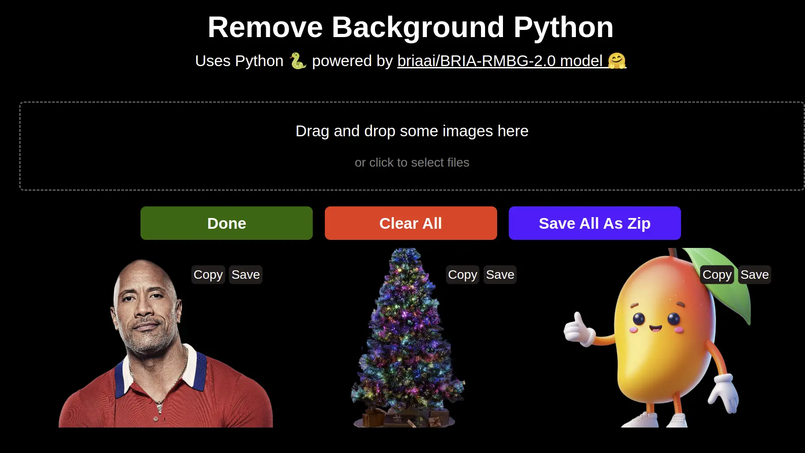

Uses the BRIA_RMBG-2.0 or 1.4 model to remove the background from an image. Supports CUDA or ONNX for CPU.
Features
Supports both CUDA for those using NVIDIA GPUs and ONNX for those using CPU. Uses the briaai/BRIA_RMBG-2.0/1.4 model to remove the background. The newer 2.0 model is much better at removing the background for generic images, but the 1.4 model is much faster and works well for simple images.
